보유 제품만 고르면
아침·저녁 루틴 완성
화장대에 있는 제품을 체크하면 클렌저부터 선크림까지 바르는 순서와 소요 시간이 나와요.
- 고르는 것
- 화장대 제품 + 집중 케어(미백·트러블 등)
- 나오는 것
- STEP별 순서, 단계별 소요 시간, 예상 총 시간
예: 가진 제품 6개로 아침 루틴 6단계, 약 7분 (데모 계정 기준)

§ 01 내 화장대 기준 스킨케어 코칭
내가 가진 제품으로 더 똑똑하게.스킨코치는 새 제품을 파는 앱이 아니에요. 지금 화장대에 있는 제품을 기준으로 생각해요.
§ 02 혹시 이런 적
토너 다음에 세럼이었나, 에센스가 먼저였나?
이 두 개 같이 발라도 되는 거 맞아?
유튜브에서 추천하던데... 내 피부에도 맞을까?
화장대에 안 쓰는 제품만 쌓여간다
새벽 1:40검색만 하다 하루가 갔어요.
§ 03 스킨코치는 다르게 생각해요
화장대에 있는 제품을 체크하면 클렌저부터 선크림까지 바르는 순서와 소요 시간이 나와요.
예: 가진 제품 6개로 아침 루틴 6단계, 약 7분 (데모 계정 기준)
내 화장대 성분과 부딪히면 빨간색, 괜찮으면 초록색. 이유와 대안까지 같이 알려드려요.
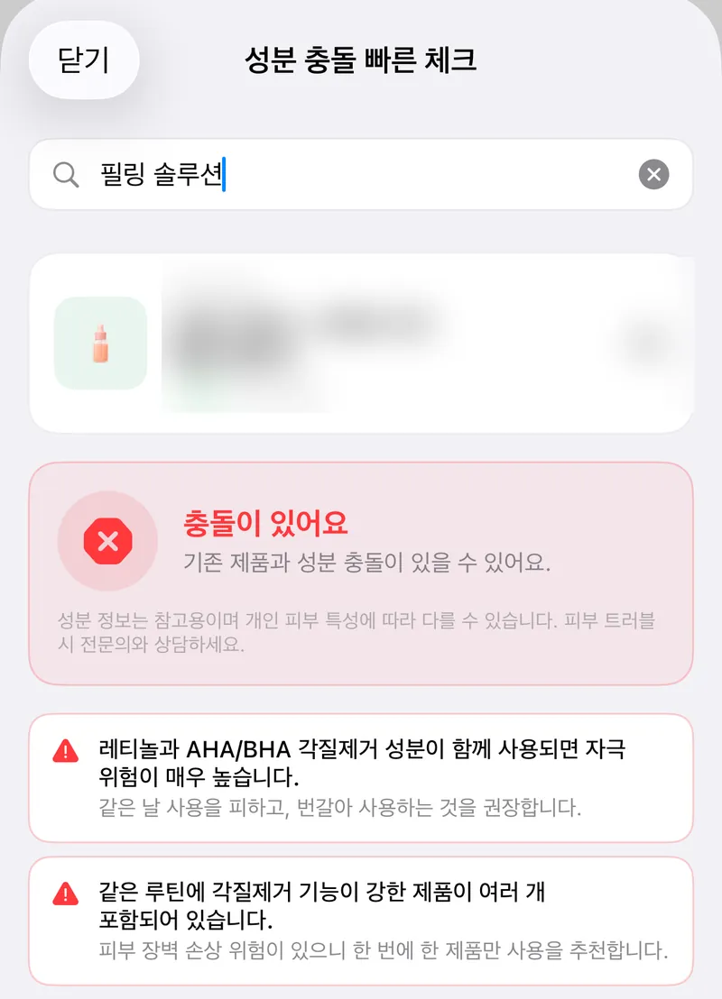
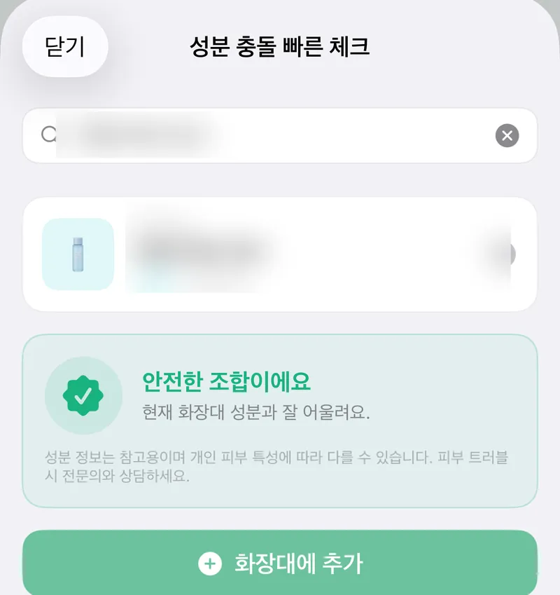
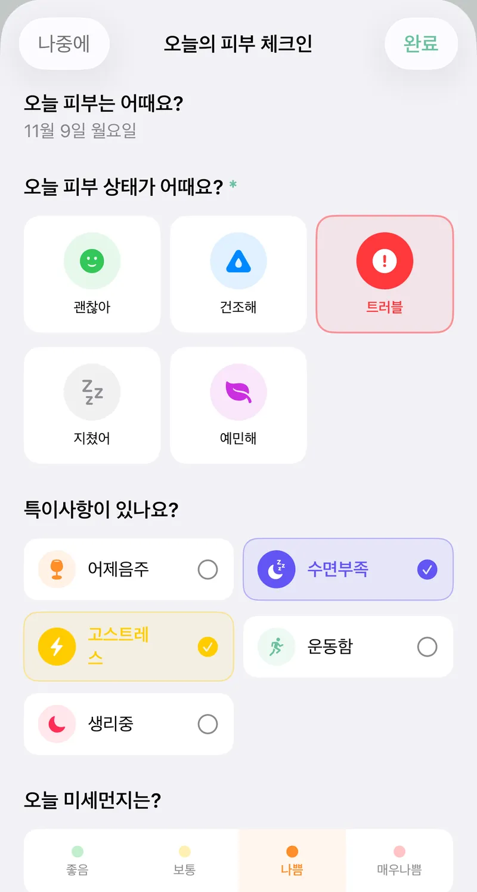
피부 상태, 수면, 스트레스, 미세먼지. 오늘의 컨디션이 홈에 바로 반영돼요.
→ 홈에 바로 반영
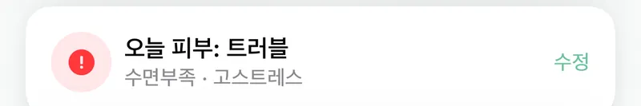
§ 04 사용법
STEP 1
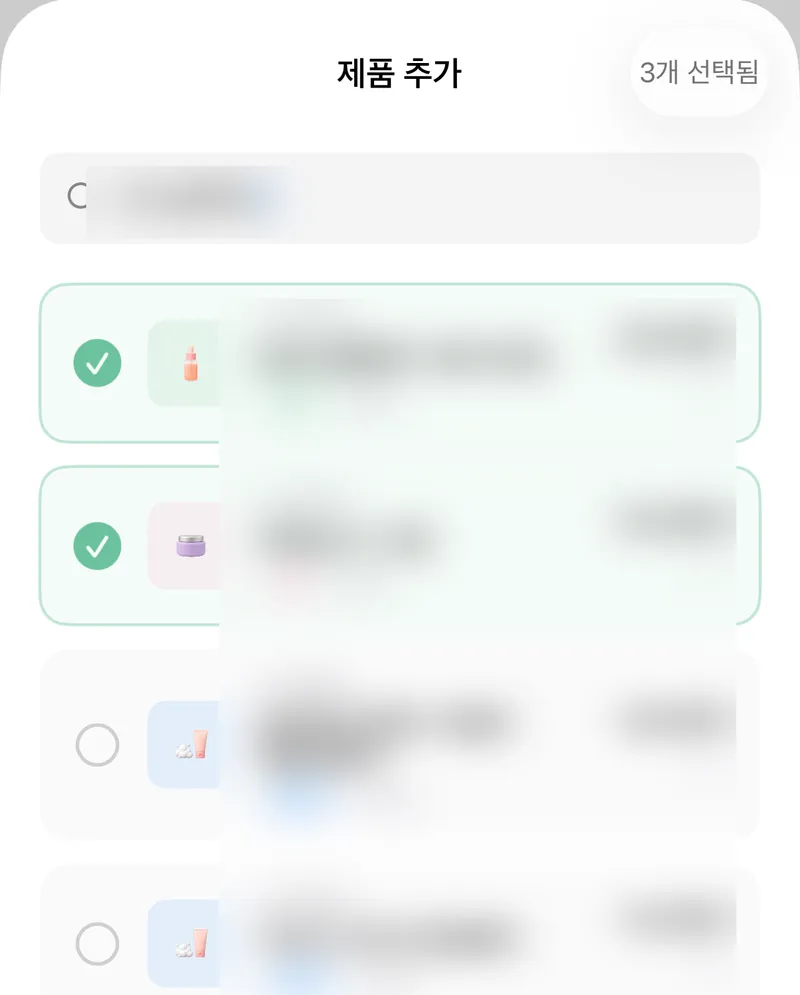
STEP 2
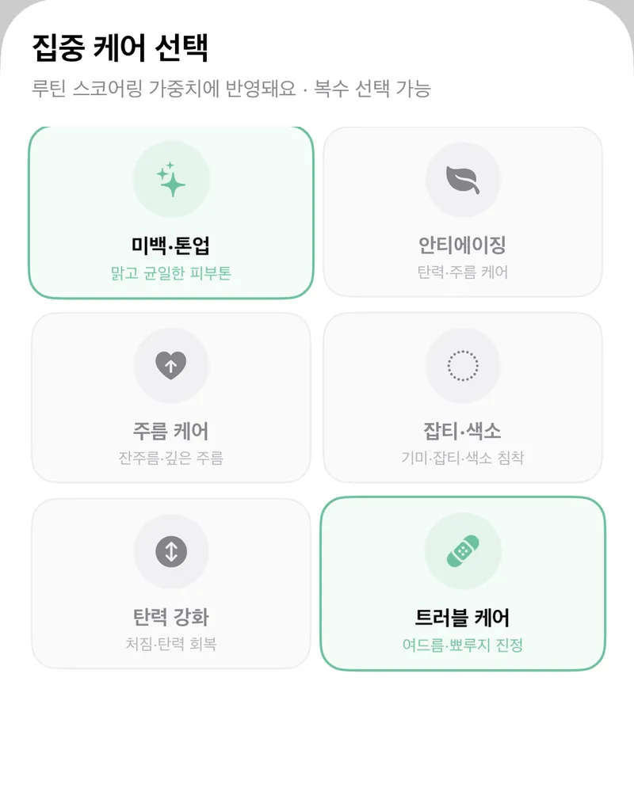
STEP 3
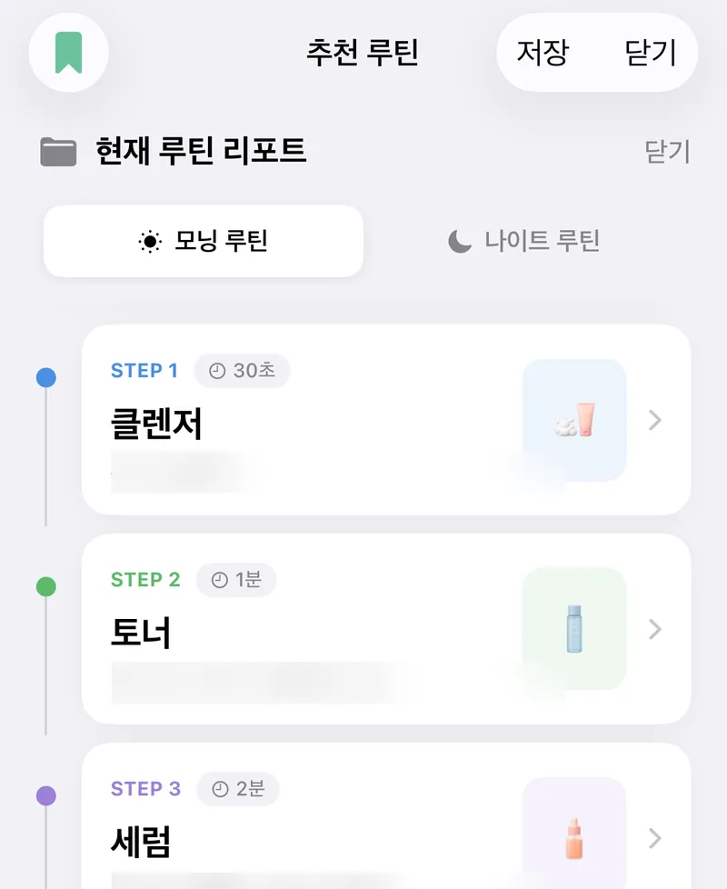
STEP 4
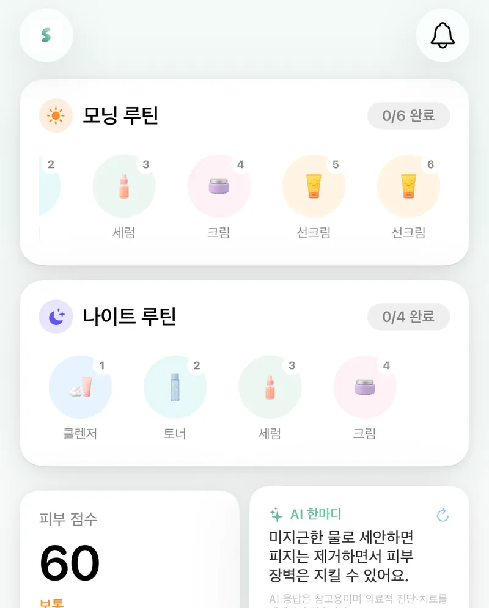
§ 05 더 많은 기능
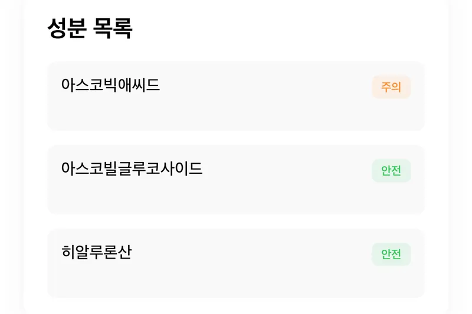
제품 하나하나 주의·안전 배지로
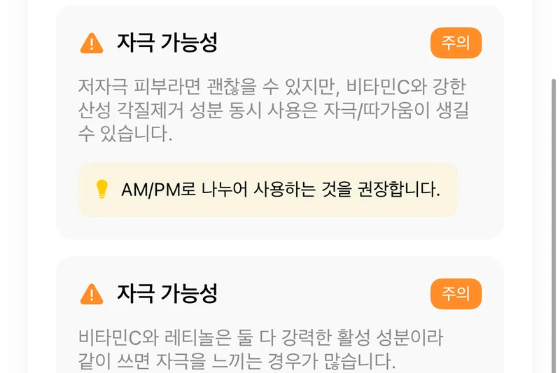
같이 쓰면 안 되는 조합은 아침·저녁으로 나눠요
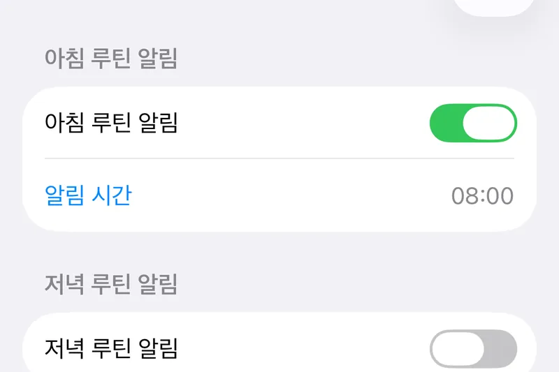
아침 8시, 저녁 10시. 원하는 시간에
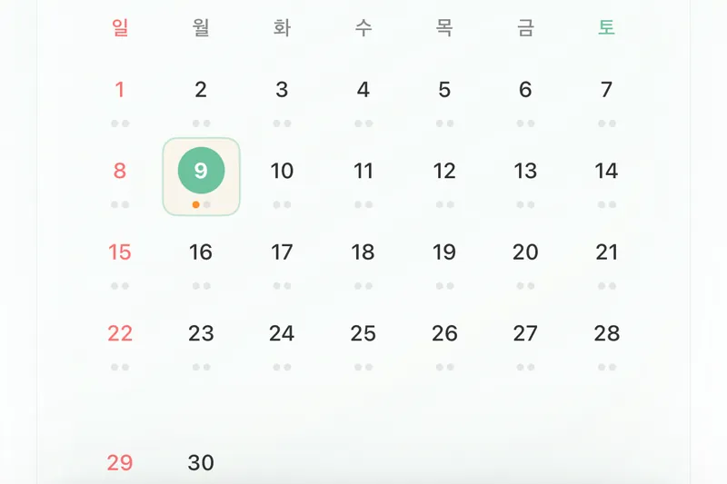
완료한 날엔 점이 찍혀요
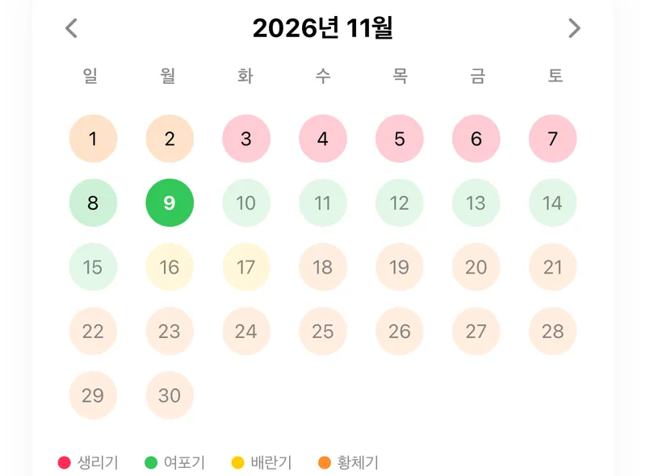
단계마다 다른 피부에 맞춘 팁
주기 단계는 입력한 날짜를 바탕으로 한 예상이고, 팁은 참고용이에요.
브랜드·제품명으로 바로 검색
§ 06 성분 노트
따로 쓰면 좋은 성분도 겹치면 자극이 커질 수 있어요.
둘 다 각질 제거 계열이라 같은 날 겹치면 장벽 손상 위험이 높아져요. 번갈아 쓰는 걸 권해요.
같은 날 피하기작용 방식이 달라 함께 쓰면 자극이 생길 수 있어요. 아침엔 비타민C, 저녁엔 레티놀로 나누면 둘 다 챙길 수 있어요.
아침·저녁 나누기필링 패드, 스크럽, BHA 토너. 이름은 달라도 하는 일은 같아요. 한 루틴에 하나만.
한 루틴에 하나만외우기 어렵다면 스킨코치에 화장대 제품을 올려두세요. 새 제품을 검색하는 순간 충돌 여부를 색으로 알려드려요.
성분 정보는 참고용이며 개인 피부 특성에 따라 다를 수 있어요. 피부 트러블 시 전문의와 상담하세요.
§ 07 FAQ
지금은 iPhone용 iOS 앱으로 준비하고 있어요.
올리브영에서 판매 중인 제품 약 3,100개를 브랜드나 제품명으로 검색할 수 있어요.
성분 데이터베이스를 기준으로 제품 간 성분 조합을 분석해 자극 위험이 알려진 조합을 알려드려요. 참고용 정보이며 의학적 진단을 대신하지 않아요.
어떤 정보를 수집하고 어디에 저장·전송하는지는 개인정보 처리방침에 정리해 두었어요.
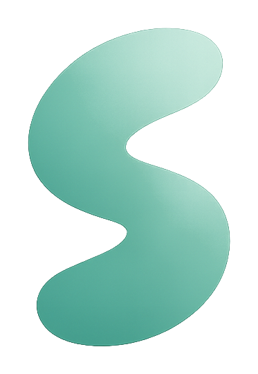
SKINCOACH
FOR iPHONE
새로 사기 전에, 가진 것부터